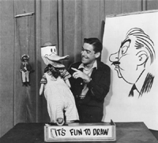

Cactus Pete, Lucky Leroy, The Hour, The BeeHive…
Do any of these ring a bell? If you grew up in the Southern Illinois area in the 50’s, 60’s,and 70’s, you might have watched some of these shows on WSIL. This website is dedicated to the history of WSIL, and also to the many on-air personalities, behind the scenes staff members, and great local programming that made WSIL an important part of our daily lives.

Bill Plater hosts "It's Fun To Draw"
We hope you will enjoy this trip down memory lane.